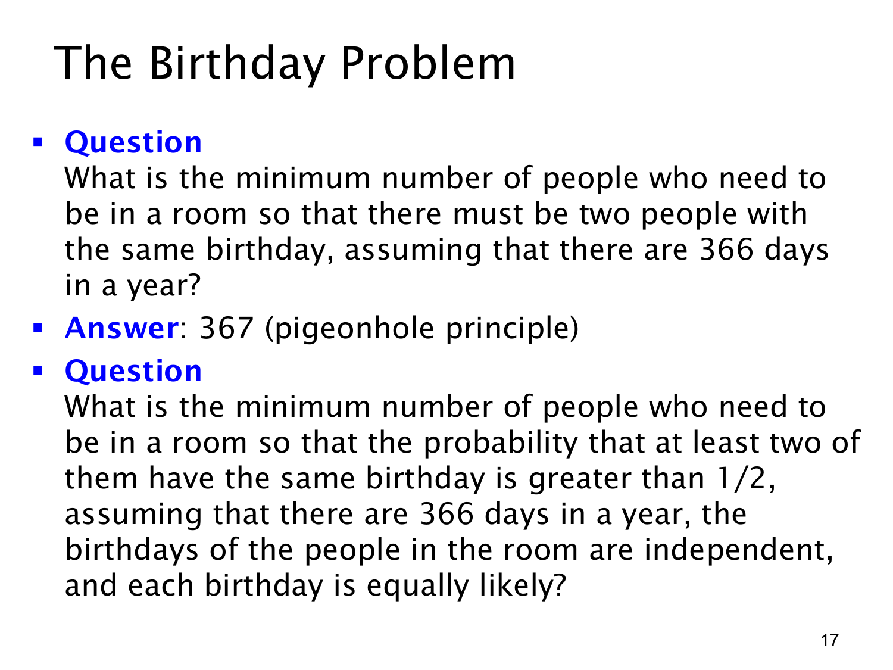

L1.9 · 第 17 页讲解原文
查看这一页课件

保证同生日，需要多少人
若生日只有 366 个可能日期，367 人中一定有人同生日。把日期当作鸽巢，367 人不可能各占一个不同日期；而 366 人仍可能恰好一天一人。这个保证只靠日期数量，不要求均匀分布或相互独立。
若把要求放宽到“至少两人同生日”的概率大于 1/2，就不必等到必然重复。这里按题目另加的模型计算：各人生日相互独立，366 个日期等可能。
令 E 为至少一对同生日，先数补事件中的生日安排。第一人有 366 种选择，第二人为避开已用日期剩 365 种，第三人剩 364 种。对 1≤n≤366，
p(E)=1−366n366⋅365⋯(366−n+1).
从小到大代入人数，找这个值首次超过 1/2 的整数 n 即可。若 n>366，重复已经必然发生，概率为 1。
这次比较的是任意两个人，不能套用上一页与今天比较的 1−(365/366)n。n 人共有 (2n) 对，人对数量增长很快，但不同人对的同生日事件有重叠，准确计算仍从“全部不同”取补。